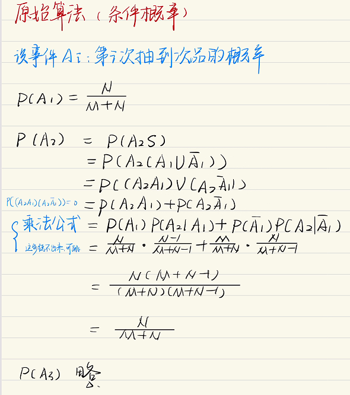
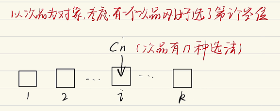
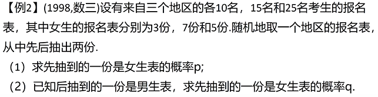
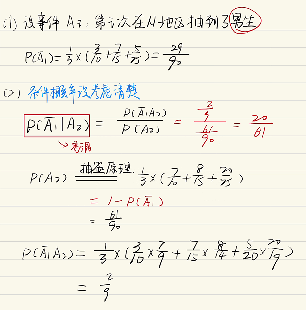
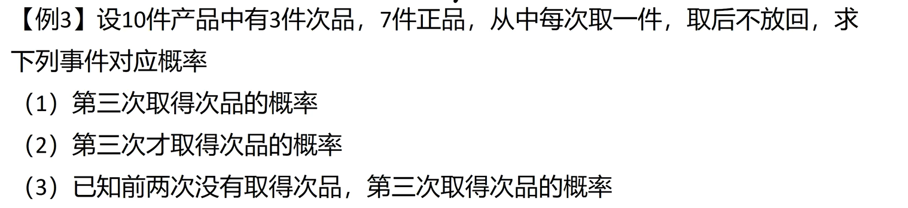
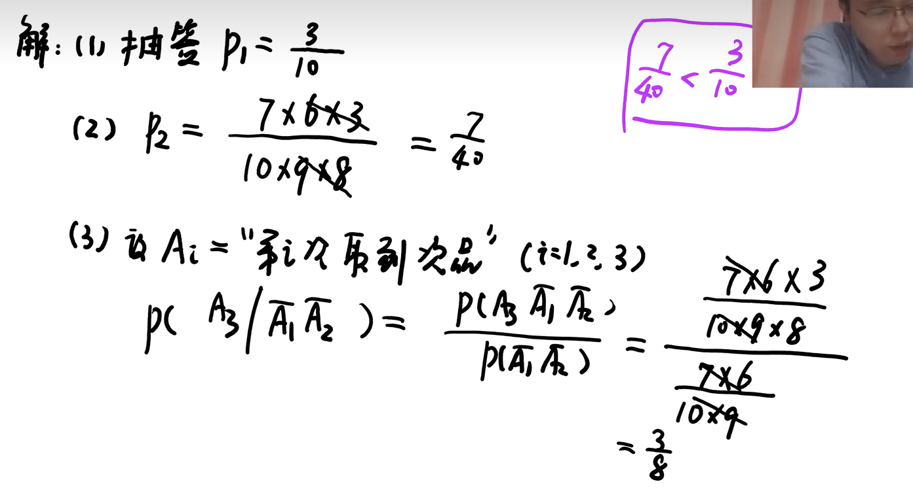

古典概型之抽签原理_哔哩哔哩_bilibili问题提出一批产品有M个正品，N个次品，任意抽取k次(k≤min(M,N))，每次抽一个，抽取后不放回，求第i(1≤i≤k)次抽出次品的概率P.一批产品有 \mathrm{M} 个正品， \mathrm{N} 个次品，任意抽取 k 次 (k \leq \min (M, N)) ， \\每次抽一个，抽取后不放回，求第 i(1 \leq i \leq k) 次抽出次品的概率 \mathrm{P}.一批产品有M个正品，N个次品，任意抽取k次(k≤min(M,N))，每次抽一个，抽取后不放回，求第i(1≤i≤k)次抽出次品的概率P.老实人算法剩下k−1k-1k−1个空位可以随便放，所以是AM+N−1k−1A_{M+N-1}^{k-1}AM+N−1k−1P=CN1AM+N−1k−1AM+Nk=N⋅(M+N−1)!(M+N−k+1)!(M+N)!(N+N−k+1)!=NM+N\begin{aligned} P=\frac{C_{N}^{1} A_{M+N-1}^{k-1}}{A_{M+N}^{k}} & =\frac{N \cdot(M+N-1) !(M+N-k+1) !}{(M+N) !(N+N-k+1) !} \\ & =\frac{N}{M+N}\end{aligned}P=AM+NkCN1AM+N−1k−1=(M+N)!(N+N−k+1)!N⋅(M+N−1)!(M+N−k+1)!=M+NN特别的，当k=M+N时P=CN1AM+N−1M+N−1AM+NM+N=N⋅(M+N−1)!(M+N)!=NM+NP=\frac{C_{N}^{1} A_{M+N-1}^{M+N-1}}{A_{M+N}^{M+N}}=\frac{N \cdot(M+N-1) !}{(M+N) !}=\frac{N}{M+N}P=AM+NM+NCN1AM+N−1M+N−1=(M+N)!N⋅(M+N−1)!=M+NN【例1】(1993，数一)一批产品共有10个正品和2个次品，任意抽取两次，每 次抽取一个抽出后不再放回，则第二次抽出的是次品的概率为【例2】【例3】